항공산업기사 (2013-06-02 기출문제)
1과목: 항공역학
1. 공기의 동점성계수 단위로 옳은 것은?
- Stroke
- poise
- cm/s
- g/cm-s
(정답률: 64%)

2. 항공기 중량이 900kgf, 날개면적이 10m2인 제트 항공기가 수평 등속도로 비행할 때 추력은 몇 kgf인가? (단, 양향비는 3 이다.)
- 300
- 250
- 200
- 150
(정답률: 84%)
3. 프로펠러의 역할을 옳게 설명한 것은?
- 항공기의 전진속도에 의해 풍차회전을 일으킨다.
- 기관으로부터 지시마력을 받아 양력을 발생시킨다.
- 기관으로부터 제동마력을 받아 양력을 발생시킨다.
- 기관으로부터 제동마력을 받아 추력을 발생시킨다.
(정답률: 61%)
4. 비행기의 세로안정과 관련된 꼬리날개 부피(Tail volume)를 옳게 표현한 것은?
- 수평꼬리날개의 면적 × 수평꼬리날개의 두께
- 수평꼬리날개의 길이 × 날개의 공기역학적 중심에서 수평꼬리날개의 압력중심까지의 거리
- 수평꼬리날개의 면적 × 무게중심에서 수평꼬리날개의 압력중심까지의 거리
- 수평꼬리날개의 길이 × 무게중심에서 수평꼬리날개의 압력중심까지의 거리
(정답률: 67%)
5. 키놀이 진동시 속도와 고도는 변화하나 받음각이 일정하고 수직방향의 가속도는 거의 변하지 않는 주기 운동을 무엇이라 하는가?
- 단주기 운동
- 승강키 주기 운동
- 장주기 운동
- 도움날개 주기 운동
(정답률: 67%)
6. 플랩 앞전이 시일(seal)로 밀폐되어 있어서 플랩 상·하면의 압력차에 의해서 오버행밸런스(Over Hang balance)와 같은 역할을 하는 것은?
- 탭 밸런스(Tap balance)
- 혼 밸런스(Horn balance)
- 프리즈 밸런스(Frise balance)
- 인터널 밸런스(Internal balance)
(정답률: 49%)
7. 수평스핀과 수직스핀의 낙하속도와 회전각속도 크기를 옳게 나타낸 것은?
- 수평스핀 낙하속도 ＞ 수직스핀 낙하속도, 수평스핀 회전각속도 ＞수직스핀 회전각속도
- 수평스핀 낙하속도＜ 수직스핀 낙하속도, 수평스핀 회전각속도 ＜ 수직스핀 회전각속도
- 수평스핀 낙하속도 ＞수직스핀 낙하속도, 수평스핀 회전각속도 ＜ 수직스핀 회전각속도
- 수평스핀 낙하속도＜ 수직스핀 낙하속도, 수평스핀 회전각속도 ＞수직스핀 회전각속도
(정답률: 83%)
8. 일정 고도에서 정상수평비행시 그림과 같은 마력곡선을 갖는 비행기에 대한 설명으로 옳은 것은?
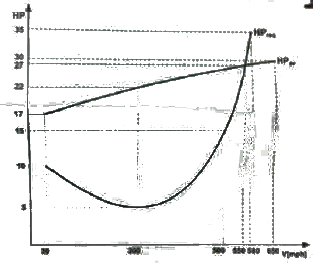
- 실속속도는 300 mph 이다.
- 최대속도는 500 mph 이다.
- 300 mph에서 잉여마력은 22hp 이다.
- 제트비행기의 전형적인 마력곡선이다.
(정답률: 56%)
9. 음속에 가까운 속도로 비행시 속도를 증가시킬수록 기수가 오히려 내려가는 경향이 생겨 조종간을 당겨야 하는 현상은?
- 더치롤(Dutch roll)
- 턱언더(Tuck under)
- 내리흐름(Down wash)
- 나선 불안정(Spiral divergence)
(정답률: 90%)
10. 라이트형제는 인류 최초의 유인동력비행을 성공하던 날 최고기록으로 59초 동안 이륙 지점에서 250m 지점까지 비행하였다. 당시 측정된 43Km/h 의 정풍을 고려한다면 대기속도는 약 몇 Km/h 인가?
- 20
- 40
- 60
- 80
(정답률: 71%)
11. 헬리콥터 주회전날개의 공력 및 회전 동역학 특성에 대한 설명으로 틀린 것은?
- 전진비행 속도의 증가에 따라 역풍영역(Reverse flowzone)이 증가한다.
- 주회전날개의 리드-래그 힌지(Lead-lag hinge)가 없으면 전진비행이 불가능하다.
- 전진비행 속도의 증가에 따라 좌우측 주회전날개 회전면에서 공기속도의 불균형이 증가한다.
- 주회전날개에 설치된 다양한 힌지 중 플래핑 힌지(Flapping hinge)가 헬리콥터 기동비행능력과 직접적인 연관이 있다.
(정답률: 69%)
12. 프로펠러 진행비(Advance drag)를 옳게 나타낸 것은? (단, n : 프로펠러 회전속도, D : 프로펠러 지름,V : 속도이다.)
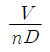
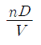
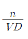
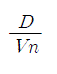
(정답률: 82%)
13. 형상항력(Profile drag)으로만 짝지어진 것은?
- 압력항력, 마찰항력
- 압력항력, 유도항력
- 마찰항력, 유도항력
- 유해항력, 유도항력
(정답률: 75%)
14. 직사각형 날개의 가로세로비를 나타낸 식으로 틀린 것은? (단, b : 날개의 길이, c : 날개의 시위, s : 날개의 면적이다.)
- b/c
- b2/s
- s/c2
- c2/s
(정답률: 78%)
15. 비압축성 유체에 대한 설명으로 옳은 것은?
- 밀도의 변화를 무시할 수 있다.
- 비압축성 유체에서 음속의 크기는 영이다.
- 초음속 영역에서의 유체는 비압축성으로 가정해도 된다.
- 큰 배관에서 발생하는 수격현상은 대표적인 비압축성 유동의 예이다.
(정답률: 71%)
16. 다음 중 동압, 정압 및 전압과의 관계가 옳은 것은?
- 동압 = 전압 × 정압
- 전압 = 정압 + 동압
- 정압 = 전압 + 동압
- 정압 = 동압 ÷ 전압
(정답률: 83%)
17. 고정익 항공기의 실속속도(Stall speed)를 증가시키는 방법이 아닌 것은?
- 날개하중의 증가
- 비행 고도의 증가
- 선회반경의 증가
- 최대 양력계수의 감소
(정답률: 47%)
18. 활공비행의 한 종류인 급강하 비행시(활공각 90°) 비행기에 작용하는 힘을 나타낸 식으로 옳은 것은? (단, L=양력, D=항력, W=항공기 무게이다.)
- L = D
- D = 0
- D = W
- D + W = 0
(정답률: 76%)
19. 헬리콥터의 코리오리스 효과를 주는 코리오리스 가속도를 옳게 나타낸 것은? (단, r : 헬리콥터의 반지름, V : 법선방향의 속도, ω : 각속도이다.)
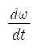
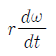
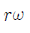
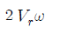
(정답률: 51%)
20. 항공기의 임계 마하수(Critical mach number)에 대한 설명으로 옳은 것은?
- 모든 비행기의 임계 마하수는 0.8이다.
- 비행기가 비행할 때 최초로 충격파가 발생될 때의 마하수이다.
- 일반적으로 임계 마하수는 항력발산 마하수보다 값이 크다.
- 저속 프로펠러 비행기에서 아주 중요한 설계 요소이다.
(정답률: 76%)
2과목: 항공기관
21. 지시마력이 80hp 인 항공기 왕복기관의 제동마력이 64hp 라면 기계효율은?
- 0.20
- 0.25
- 0.80
- 1.25
(정답률: 72%)
22. 과급기(Supercharger)를 장착하지 않은 왕복기관의 경우 표준 해면상(Sea level)에서 최대 흡기압력(Maximmmanifold pressure)은 몇 inHg 인가?
- 17
- 27.2
- 29.92
- 30.92
(정답률: 89%)
23. 가스터빈기관에서 rpm의 변화가 심할 때 그 원인이 아닌 것은?
- 주연료장치 고장
- 연료 라인의 결빙
- 가변 정기 베인 리깅 불량
- 연료 부스터의 압력의 불안정
(정답률: 47%)
24. 고압 점화 케이블을 유연한 금속제 관속에 넣어 느슨하게 장착하는 주된 이유는?
- 접지회로 저항을 줄이기 위하여
- 고고도에서 방전을 방지하기 위하여
- 케이블 피복제의 산화와 부식을 방지
- 작동 중 고주파의 전자파 영향을 줄이기 위하여
(정답률: 56%)
25. 브레이튼 사이클(Brayton Cycle)의 이론 열효율을 옳게 표시한 것은? (단, rp 압력비, k 비열비이다.)
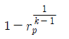
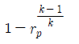
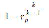
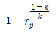
(정답률: 39%)
26. 고고도에서 비행시 조종사가 연료/공기 혼합비를 조정하는 주된 이유는?
- 결빙을 방지하기 위하여
- 역화를 방지하기 위하여
- 실린더를 냉각하기 위하여
- 혼합비가 농후해지는 것을 방지하기 위하여
(정답률: 85%)
27. 왕복기관에 노크현상을 일으키는 요소가 아닌 것은?
- 압축비
- 연료의 옥탄가
- 실린더 온도
- 연료의 이소옥탄
(정답률: 57%)
28. 가스터빈기관에서 주로 사용하는 윤활계통의 형식은?
- dry sump, jet and spray
- dry sump, dip and splash
- wet sump, spray and splash
- wet sump, dip and pressure
(정답률: 73%)
29. 정속 프로펠러(Constant-Speed Propeller)는 기관속도를 정속(on-speed)으로 유지하기 위해 프로펠러 피치를 자동으로 조정해 주도록 되어 있는데 이러한 기능은 어떤 장치에 의해 조정되는가?
- 3-way 밸브
- 조속기(Governor)
- 프로펠러 실린더(Propeller cylinder)
- 프로펠러 허브 어셈블리(Propeller hub aseembly)
(정답률: 88%)
30. 가스터빈기관에서 연료계통의 여압 및 드레인 밸브(P&D valve)의 기능이 아닌 것은?
- 일정 압력까지 연료 흐름을 차단한다.
- 1차 연료와 2차 연료 흐름으로 분리한다.
- 연료 압력이 규정치 이상 넘지 않도록 조절한다.
- 기관 정지시 노즐에 남은 연료를 외부로 방출한다.
(정답률: 63%)
31. 왕복기관의 오일 냉각이 흐름조절 밸브(Oil coolerflow control valve)가 열리는 조건은?
- 기관으로부터 나오는 오일의 온도가 너무 높을 때
- 기관으로부터 나오는 오일의 온도가 너무 낮을 때
- 기관오일펌프 배출체적이 소기펌프 출구체적보다 클 때
- 소기펌프 배출체적이 기관오일펌프 입구체적보다 클 때
(정답률: 47%)
32. 비행 중 기관 고장시 프로펠러를 페더링(Feathering)시켜야 하는 이유로 옳은 것은?
- 기관의 진동을 유발해 화재를 방지하기 위하여
- 풍차(Windmill)효과로 인해 추력을 얻기 위하여
- 프로펠러 회전을 멈춰 추가적인 손상을 방지하기 위하여
- 전면과 후면의 차압으로 프로펠러를 회전시키기 위하여
(정답률: 77%)
33. 가스터빈기관의 추력에 영향을 미치는 요소가 아닌 것은?
- 옥탄가
- 고도
- 기관RPM
- 비행속도
(정답률: 68%)
34. 왕복기관의 부자식 기화기에서 부자실(Float chamber)의 연료 유면이 높아졌을 때 기화기에서 공급하는 혼합비는 어떻게 변하는가?
- 농후해진다.
- 희박해진다.
- 변하지 않는다.
- 출력이 증가하면 희박해진다.
(정답률: 79%)
35. 축류식 압축기의 1단당 압력비가 1.6이고, 회전자 깃에 의한 압력 상승비가 1.3일 때 압축기의 반동도는?
- 0.2
- 0.3
- 0.5
- 0.6
(정답률: 56%)
36. 독립된 소형 가스터빈기관으로 외부의 동력 없이 기관을 시동시키는 시동 계통은?
- 전동기식 시동계통
- 공기 터빈식 시동계통
- 가스 터빈식 시동계통
- 시동-발전기식 시동계통
(정답률: 46%)
37. 왕복기관과 비교한 가스터빈기관의 특징으로 틀린 것은?
- 단위추력당 중량비가 낮다.
- 대부분의 구성품이 회전운동으로 이루어져 진동이 많다.
- 고도에 따라 출력을 유지하기 위한 과급기가 불필요하다.
- 가스터빈기관은 롤러베어링 또는 볼베어링을 주로 사용한다.
(정답률: 72%)
38. 윤활계통 중 오일탱크의 오일을 베어링까지 공급해주는 것은?
- 드레인계통(Drain System)
- 가압계통(Pressure System)
- 브레더계통(Breather System)
- 스케빈지계통(Scavenge System)
(정답률: 64%)
39. 다음 중 공기 흡입기관이 아닌 제트기관은?
- 로켓
- 램제트
- 펄스제트
- 터보 팬
(정답률: 90%)
40. 브레이튼 사이클(Brayton cycle)의 이상적인 기본 사이클 과정으로 옳은 것은?
- 단열압축→등적가열→단열팽창→등적방열
- 단열압축→등압가열→단열팽창→등적방열
- 단열압축→등적가열→등압가열→단열팽창
- 단열압축→등압가열→단열팽창→등압방열
(정답률: 71%)
3과목: 항공기체
41. 유효길이 16in인 토크렌치와 유효길이 4in인 연장공구를 사용하여 1500 in-lb의 토크를 이루려면 이때 필요한 토크렌치의 토크는 몇 in-lb 인가?
- 1000
- 1200
- 1300
- 1500
(정답률: 72%)
42. 다음 중 항공기기관을 장착하거나 보호하기 위한 구조물이 아닌 것은?
- 나셀
- 포드
- 카울링
- 킬빔
(정답률: 80%)
43. 판금 성형법의 접기가공(Folding)에 대한 설명으로 틀린 것은?
- 굴곡반경이란 가공된 재료와 곡선상의 내측 반경을 말한다.
- 얇은 판이나 플레이트 등을 굴곡하는 것을 접기가공이라 한다.
- 세트백은 굽힘 접선에서 성형점까지의 길이를 나타낸것이다.
- 스프링백의 양은 굽힘 반지름, 굽힘 각과는 관계없고 재질의 단단한 정도에 따라 달라진다.
(정답률: 70%)
44. 항공기 날개를 구성하는 주요부재로만 나열된 것은?
- 외피, 세로대. 스트링거, 리브
- 외피, 벌크헤드, 스트링거, 리브
- 날개보, 리브, 벌크헤드, 외피
- 날개보, 리브, 스트링거, 외피
(정답률: 82%)
45. 항공기 타이어를 밸런싱(Balancing)하는 주된 목적은?
- 진동과 과도한 마모를 줄이기 위하여
- 브레이크의 효율을 향상시키기 위하여
- 비행 중 타이어의 회전을 막기 위하여
- 1차 조종면의 움직임을 확인하기 위하여
(정답률: 73%)
46. 두랄루민을 시작으로 개량되기 시작한 고강도 알루미늄 합금으로 내식성보다도 강도를 중시하여 만들어진 것은?
- 1100
- 2014
- 3003
- 5⑤6
(정답률: 74%)
47. 제작비용이 적게 들기 때문에 소형기에서 주로 사용되며 외피는 공기력의 전달만을 하도록 되어있는 항공기 구조형식은?
- 응력외피구조
- 트러스구조
- 샌드위치구조
- 페일세이프구조
(정답률: 80%)
48. 그림과 같은 그래프를 갖는 완충장치의 효율은 약 몇 %인가?
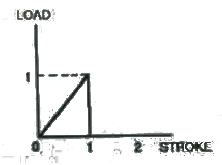
- 30
- 40
- 50
- 60
(정답률: 88%)
49. 기체표면과 공기와의 마찰열이 높은 초음속 항공기의 재료로 쓰이는 것은?
- 주철
- 니켈 크롬강
- 마그네슘 합금
- 티타늄 합금
(정답률: 81%)
50. 볼트의 부품번호가 AN 3 DD 5 A 인 경우 A에 대한 설명으로 옳은 것은?
- 볼트의 재질을 의미한다.
- 나사 끝에 구멍이 없음을 의미한다.
- 볼트 머리에 두 개의 구멍이 있음을 의미한다.
- 미해군과 공군에 의한 규격으로 승인된 부품이다.
(정답률: 68%)
51. 리벳작업을 위한 구멍뚫기 작업시 설명으로 옳은 것은?
- 드릴작업 전 리밍작업을 한다.
- 구멍은 리벳 직경보다 약간 작게 한다.
- 리밍작업 시 효율을 높이기 위해서는 회전방향을 한쪽 방향으로만 가공한다
- 드릴작업 후 구멍의 버(Burr)는 되도록 보존하도록 한다.
(정답률: 53%)
52. 알루미늄 합금을 용접할 때 가장 적합한 불꽃은?
- 탄화불꽃
- 증성불꽃
- 산화불꽃
- 활성불꽃
(정답률: 57%)
53. 항공기가 효율적인 비행을 하기 위해서는 조종면의 앞전이 무거운 상태를 유지해야 하는데, 이것을 무엇이라 하는가?
- 평형상태(On Balance)
- 과대평형(Over Balance)
- 과소평형(Under Balance)
- 정적평형(Static Balance)
(정답률: 72%)
54. 케이블 턴버클 안전결선 방법에 대한 설명으로 옳은 것은?(오류 신고가 접수된 문제입니다. 반드시 정답과 해설을 확인하시기 바랍니다.)
- 배럴의 경사구멍에 핀을 꽂아 핀이 들어가지 않으면 양호한 것이다.
- 단선식 결선법은 턴버클 엔드에 최소 6회 감아 마무리한다.
- 복선식 결선법은 케이블 직경이 1/8in 이상인 경우에 주로 사용한다.
- 턴버클 엔드의 나사산이 배럴 밖으로 5개 이상 나오지 않도록 한다.
(정답률: 69%)
55. 두께가 0.01in 인 판의 전단흐름이 30 lb/in 일 때 전단응력은 몇 lb/in2인가?
- 3000
- 300
- 30
- 0.3
(정답률: 70%)
56. 테어무게(Tare weight)에 대한 설명으로 옳은 것은?
- 항공기에 인가된 최대중량을 의미한다.
- 항공기에 장착된 모든 운용 장비품을 포함한 무게를 의미한다.
- 중량 측정시 사용하는 보조장치 촉(choke), 블록(Block), 지지대(Stand) 등의 무게를 의미한다.
- 항공기에 사용되는 작동유, 기관 냉각액 등의 총무게를 의미한다.
(정답률: 70%)
57. 그림과 같은 수송기의 V-n 선도에서 A와 D의 연결선은 무엇을 나타내는가?
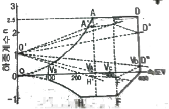
- 돌풍 하중배수
- 양력계수
- 설계 순항속도
- 설계제한 하중배수
(정답률: 77%)
58. 일정한 응력을 받는 재료가 일정한 온도에서 시간이 경과함에 따라 하중이 일정하더라도 변형률이 변화하는 현상은?
- 크랙(Crack)
- 피로(Fatigue)
- 크리프(Creep)
- 응력집중(Stress Concentration)
(정답률: 86%)
59. 케이블 조종 계통(Cable control system)에서 케이블 안내기구로 사용되는 것은?
- 풀리(Pulley)
- 벨크랭크(Bell crank)
- 토크튜브(Torque tube)
- 푸시-풀 로드(Push-Pull rod)
(정답률: 64%)
60. 화학적 피막 처리 방법의 하나로 알루미늄 합금의 표면에 0.00001~0.000⑤in의 크로메이트처리(Chromatetreatment)를 하여 내식성과 도장 작업의 접착 효과를 증진시키는 부식방지 처리방법은?
- 알로다인처리
- 알크레이드처리
- 양극산화처리
- 인삼염피막처리
(정답률: 51%)
4과목: 항공장비
61. 유압계통에 사용되는 작동유의 기능이 아닌 것은?
- 열을 흡수한다.
- 필요한 요소 사이를 밀봉한다.
- 움직이는 기계요소를 윤활시킨다.
- 부품의 제빙 또는 방빙 역할을 한다.
(정답률: 75%)
62. 그림과 같이 활주로에 비행기가 착륙하고 있다면 지상로컬라이저(localizer) 안테나의 일반적인 위치로 가장 적당한 곳은?
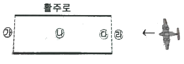
- ㉮
- ㉯
- ㉰
- ㉱
(정답률: 72%)
63. 자여자 직류 발전기의 계자권선에 잔류 자기를 희생시키는 방법은?
- 브러시(Brush)를 재설치한다.
- 전기자를 계속하여 회전시킨다.
- 정류자(Commutator) 편에 만들어진 자기를 제거한다.
- 축전지를 사용하여 계자권선을 섬광(Flashing)시킨다.
(정답률: 55%)
64. 객실의 고도에 상승률이 클 때 조절방법으로 옳은 것은?
- 아웃플로 밸브를 빨리 닫는다.
- 아웃플로 밸브를 천천히 닫는다.
- 객실 압축기 속도를 감소시킨다.
- 객실 압축기 속도를 증가시킨다.
(정답률: 60%)
65. 싱크로 전기기기에 대한 설명으로 틀린 것은?
- 회전축의 위치를 측정 또는 제어하기 위해 사용되는 특수한 회전기이다.
- 각도검출 및 지시용으로는 2개의 싱크로 전자기기를 1조로 사용한다.
- 구조는 고정자측에 1차권선, 회전자측에 2차권선을 갖는 회전변압기이고, 2차측에는 정현파 교류가 발생하도록 되어있다.
- 항공기에서는 콤파스 계기상에 VOR국이나 ADF국 방위를 지시하는 지시계기로서 사용되고 있다.
(정답률: 65%)
66. 다음 중 원격지시 컴퍼스(Compass)의 종류가 아닌 것은?
- 자이로신 컴퍼스(Gyrosyn compass)
- 마그네신 컴파스(Magnesyn compass)
- 스탠드-바이 컴파스(Stand-by compass)
- 자이로 플럭스 게이트 컴퍼스(Gyro flux gate compass)
(정답률: 62%)
67. 비행 중 제빙기 부츠를 팽창시키기 위해 공기 압력을 팽창순서대로 가해주는 장치는?
- 배출기
- 분배 밸브
- 진공 안전 밸브
- 압력 조절기와 안전 밸브
(정답률: 83%)
68. 다음 중 피토관의 동압관과 연결된 계기는?
- 고도계
- 선회계
- 자이로계기
- 속도계
(정답률: 70%)
69. 비상조명계통(Emergency light system)에 대한 설명으로 옳은 것은?(오류 신고가 접수된 문제입니다. 반드시 정답과 해설을 확인하시기 바랍니다.)
- 비상조명계통은 비행시에만 작동된다.
- 항공기에 전기공급을 차단할 때에는 비상조명스위치를 Arm에 선택해야 배터리의 방전을 방지할 수 있다.
- On position에서는 전원상실에 관계없이 자체 배터리에서 전기가 공급되어 작동된다.
- 항공기에 전기공급을 차단할 때는 비상조명 스위치를 off에 선택해야 배터리의 방전을 방지할 수 있다.
(정답률: 38%)
70. 100V, 1000W의 전열기에 80V를 가하였을 때의 전력은 몇 W 인가?
- 1000
- 640
- 400
- 320
(정답률: 67%)
71. 그림과 같은 Wheatstone bridge가 평형이 되려면 X의 저항은 몇 Ω이 되어야 하는가?
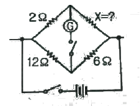
- 1
- 2
- 3
- 4
(정답률: 82%)
72. 유압계통에서 필터 내에 바이패스 릴리프 밸브(Bypassrelief valve)의 주된 목적은?
- 유압유 공급 라인에 압력이 과도해지는 것으로부터 계통을 보호하기 위하여
- 필터 엘리먼트가 막힐 경우 유압유를 계통에 공급하기 위하여
- 회로 압력을 설정 값 이하로 제한하여 계통을 보호하기 위하여
- 필터 엘리먼트(Element) 내에 유압유 압력이 높아지면 귀환 라인으로 유압유를 보내기 위하여
(정답률: 41%)
73. 승객이 이용하는 비디오 정보 시스템인 에어쇼에 제공되는 입력 정보가 아닌 것은?
- ADS(Air Data System)
- ATC(Air Traffic Control)
- FMS(Flight Management System)
- INS(Inertial Navigation System)
(정답률: 56%)
74. 항공기가 산악 또는 지면과의 충돌 사로를 방지하는데 사용되는 장비는?
- Air traffic control system
- Inertial navigation system
- Distance measuring equipment
- Ground proximity warning system
(정답률: 86%)
75. 다음 중 히스테리시스(Histerisis)로 인한 고도계의 오차는?
- 눈금오차
- 온도오차
- 탄성오차
- 기계적오차
(정답률: 72%)
76. DME의 주파수 할당에 대한 설명으로 틀린 것은?
- 채널 간격은 10MHz 이다.
- UHF파 126채널(Channel)로 되어 있다.
- 저채널에서는 상공에서 지상은 지상에서 상공보다 높다.
- 상공에서 지상, 지상에서 상공의 주파수 차이는 63MHz이다.
(정답률: 47%)
77. 3상 교류발전기의 보조기기에 대한 설명으로 틀린 것은?
- 교류발전기에서 역전류 차단기를 통해 전류가 역류하는 것을 방지한다.
- 기관의 회전수에 관계없이 일정한 출력 주파수를 얻기 위해 정속구동장치가 이용된다.
- 교류발전기에서 별도의 직류발전기를 설치하지 않고 변압기 정류기 장치(TR unit)에 의해 직류를 공급한다.
- 3상 교류발전기는 자계권선에 공급되는 직류전류를 조절함으로서 전압조절이 이루어진다.
(정답률: 33%)
78. RMI(Radio magnetic indicator)가 지시하는 것은?
- 비행고도
- VOR 거리
- 비행코스의 편위
- VOR 방위
(정답률: 56%)
79. 발전기 출력 제어 회로에 사용되는 제너다이오드(Zenerdiode)의 목적은?
- 정전류제어
- 역류방지
- 정전압제어
- 과전류방지
(정답률: 53%)
80. 여러 개의 열스위치(Thermal switch)와 한 개의 경고등으로 구성되어 있는 화재탐지장치의 연결방법은?
- 스위치는 서로 직렬, 경고등도 직렬이다.
- 스위치는 서로 병렬이고, 경고등은 직렬이다.
- 스위치는 서로 병렬이고, 경고등도 병렬이다.
- 스위치는 서로 직렬이고, 경고등은 병렬이다.
(정답률: 71%)